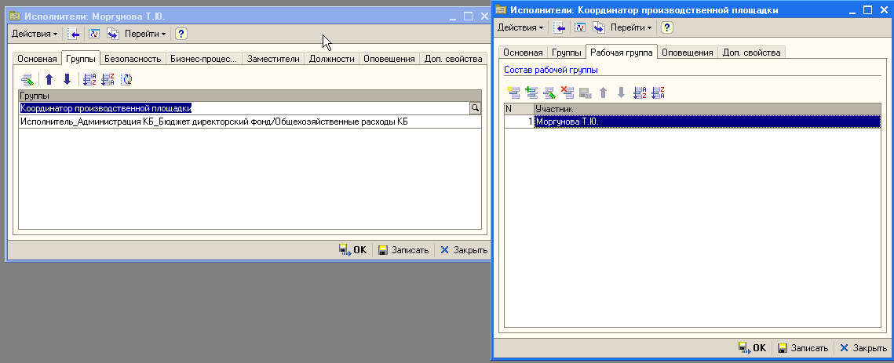

Нужны полные права на Инталева или админские
находим по примеру кого заводим
в регистре фильтр и посмотреть
у нового пользователя в группах проставить найденое
В исполнит. дважды на строке (на каждой) в откр. спр. заменить текущего на нового
